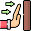
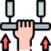

git init
Creates a new local repository in the current directory.
git clone
Copies an existing remote repository to your local machine.
git status
Shows the state of your working directory and staging area.
git add
Adds changes in your working directory to the staging area, which is a temporary area where you can prepare your next commit.
git commit
Records the changes in the staging area as a new snapshot in the local repository, along with a message describing the changes.
git push
Uploads the local changes to the remote repository usually a on a plataform like Github or Gitlab.
git pull
Downloads the latest commits from a remote repository and merges then with your local branch.
git branch
Lists, creates, renames, or deletes branches in your local repository. A branch is a pointer to a specific commit.
git checkout
Switches your working directory to a different branch or commit, discarding any uncommited changes.
git merge
Combines the changes from one branch into another branch, creating a new commit if there are no conflicts.
git diff
Shows the differences between two commits, branches, files, or the working directory and the staging area.
git log
Shows the history of commits in the current branch, along with their messages, authors, and dates.